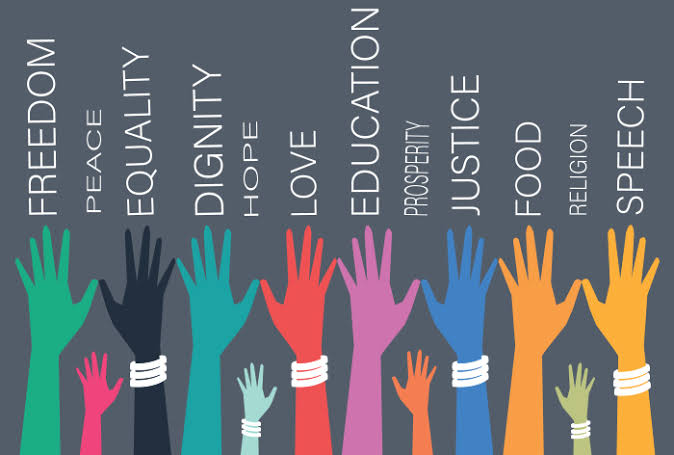
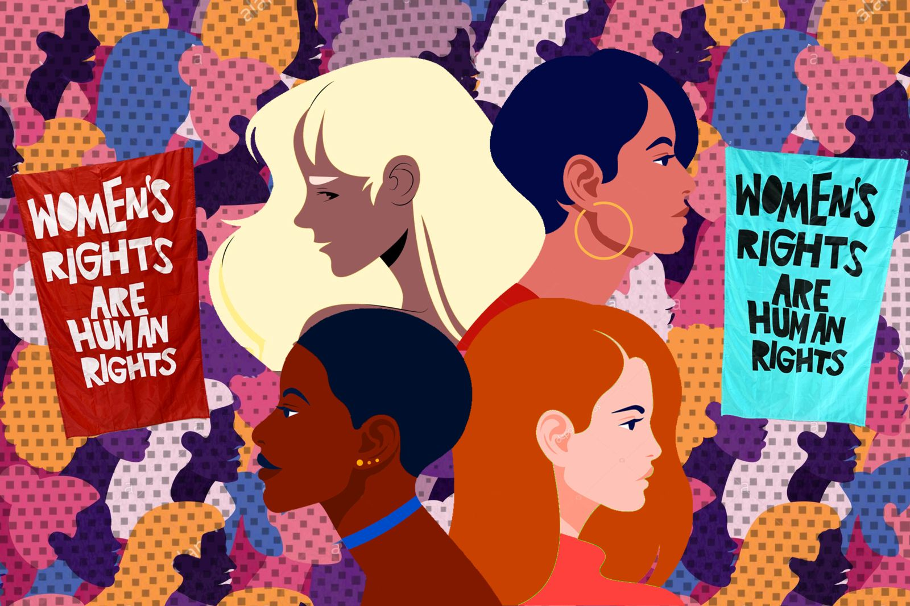
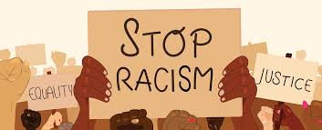

Equal Rights for All
This section discusses the fundamental rights that every person should have, regardless of their background or identity. Equality is the cornerstone of a just society.
Human Rights include to the right of life and liberty. The right of life and liberty forms the foundation of every human being rights. With no guarantee of life no other freedoms can be enjoyed. Human Rights also include Freedom from slavery and torture.These protections are absolute because they preserve the innate human dignity, bodily autonomy, and psychological safety required for individuals to function, survive, and thrive in a civilized society. Lastly freedom of opinion and expressions.They empower citizens to hold governments accountable, drive innovation through the free exchange of ideas, and protect human dignity by allowing individuals to speak their minds.

Women's Right
Man or Women, we are all entitled to human rights. Not all of the rights women have today such as, an education, the right to own property, the right to equal wage, and a big one talked about a lot throughout history, the right to vote, were given to them in the past. Women have fought very hard for the rights they have today, and though things today still are not perfectly equal, it’s much better than it was. In this reading you will read about women’s rights today, and the struggle that came to how things are today.

Racial Equality
Highlighting the need for fairness and equal treatment for people of all races and ethnicities. We aim to dismantle systemic barriers and celebrate the diversity that enriches our world.
Racial equality means that people of all races are treated fairly and have the same rights. It means that no one should be treated differently because of their race or skin color. Everyone should have equal opportunities in education, jobs, and other areas of life. Racial equality helps create a fair and respectful society. It encourages people to stand against racism and discrimination. The goal is for everyone to be treated with dignity and respect, regardless of their racial background.

LGBTQ+ Equality
Discussing the rights and recognition for gay, lesbian, and other LGBTQ+ individuals. Love is love, and everyone deserves to live authentically and without fear of discrimination.
LGBTQ+ equality means that everyone should be treated fairly and with respect, no matter who they love or how they identify. People in the LGBTQ+ community deserve the same rights and opportunities as everyone else. Equality helps create a world where people can be themselves without fear of being judged or treated differently. By being kind, accepting, and supportive, we can help make sure everyone feels included and valued.